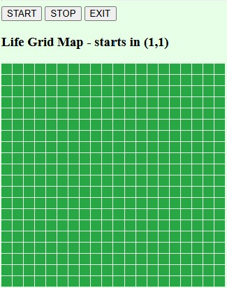
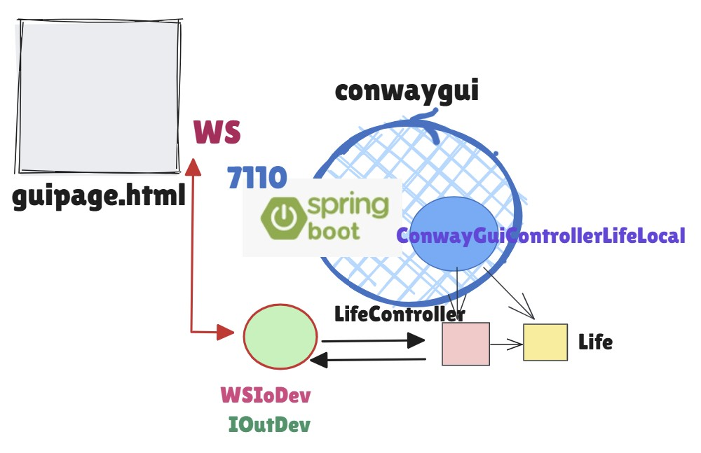

ConwayLife25¶
ConwayLife25: Obiettivi e fasi del lavoro
Parte I: da JavaScript a Java
Parte II: verso gli attori
Parte III: celle come attori locali
Parte IV: celle come attori distribuiti
ConwayLife25: Obiettivi e fasi del lavoro¶
Il Gioco della vita è un automa cellulare sviluppato dal matematico inglese John Horton Conway nel 1970 e costituisce un modello matematico utilizzato per studiare .
La previsione del comportamento a lungo termine del Gioco della Vita è un problema che ha affascinato matematici e informatici per decenni e, nonostante numerosi studi, non esiste ancora una soluzione definitiva e generale, a causa
Complessità esponenziale: Il numero di possibili configurazioni di una griglia di celle aumenta in modo esponenziale con la dimensione della griglia stessa. Questo rende impraticabile un’analisi esaustiva di tutte le possibili evoluzioni, anche per griglie di dimensioni moderate.
Comportamento caotico: Piccole variazioni nella configurazione iniziale possono portare a risultati completamente diversi nel lungo periodo, rendendo difficile stabilire delle leggi generali che governino l’evoluzione del sistema.
Emergenza: Dal semplice insieme di regole del gioco emergono comportamenti complessi e imprevedibili, come la formazione di strutture stabili, oscillanti o in continua evoluzione.
Anche con una griglia finita, prevedere il comportamento a lungo termine di una configurazione iniziale rimane un problema complesso. Il numero di possibili configurazioni, anche se finito, può essere enorme, rendendo impraticabile un’analisi esaustiva.
Inoltre, a differenza di molti altri sistemi fisici, il Gioco della Vita non è sempre reversibile. Ciò significa che, data una configurazione finale, non è sempre possibile risalire univocamente alla configurazione iniziale che l’ha generata. Molte configurazioni finali possono avere più configurazioni iniziali che portano allo stesso risultato.
Dunque, determinare la configurazione iniziale che porta a una data configurazione finale nel Gioco della Vita è un problema molto complesso e, in generale, non esiste una soluzione algoritmica efficiente.
Nonostante le difficoltà, sono stati fatti numerosi progressi nella comprensione del Gioco della Vita, che includono la Classificazione delle configurazioni (still life, oscillatori, spaceship, …) e Teoremi parziali
Il Gioco della vita viene qui usato come applicazione di riferimento per realizzare un sistema software per passi successivi, introducendo ad ogni passo qualche nuova caratteristica che rende il sistema via via .
Sistema Complesso¶
Molte parti con interazioni imprevedibili: Un sistema complesso è più simile a un ecosistema, dove molte entità interagiscono in modo non lineare e le loro interazioni possono portare a comportamenti emergenti e difficili da prevedere.
Difficile da ridurre a parti isolate: Le parti di un sistema complesso sono interconnesse in modo così stretto che è difficile isolarle e analizzarle singolarmente senza perdere informazioni cruciali.
Comportamento emergente: Il comportamento complessivo del sistema non può essere completamente compreso analizzando le singole parti, ma emerge dalle interazioni tra di esse.
Sistema Complicato¶
Molte parti, ma interazioni prevedibili: Un sistema complicato è come un grande puzzle con molti pezzi. Ogni pezzo ha una funzione specifica e le interazioni tra i pezzi sono ben definite e prevedibili.
Risolvibile con analisi dettagliata: Se analizziamo a fondo ogni parte di un sistema complicato e le loro interazioni, possiamo comprendere il sistema nel suo insieme e prevedere il suo comportamento.
procedere in modo bottom-up usando linguaggi noti (JavaScript e Java) per realizzrae il gioco `Conway Life`_> (si veda anche `Conway Life play`_>)
impostare il prodotto in modo che possa ‘evolvere’ mediante aggiunte progressive di funzionalità e senza modifiche a quanto è stato già realizzato e testato richiamandosi ad alcuni principi-base delle costruzione del sowftare
realizzare una pagina HTML che funga da dispostivo di input-ouput capace di interagire con un server via WebSocket
trasformare il prodtto in un microservizio a sè stante, capace di comunicare con l’applicazione mediante scambio di messaggi usando MQTT fruibile in rete usando SpringBoot
distribuire il prodotto come immagine Docker. Il microservizio diventa un sistema software di cui occcorre consoscere solo la Vista esterna.
considerare la GUI come dispositivo evoluto di I/O e realizzarla come un microservizio a sè stante, capace di comunicare con l’applicazione mediante scambio di messaggi usando MQTT e opportuni astrazioni di comunicazione (custom)
reimpostare l’applicazione Java come un agente (Actor) intronsecamente capace di interagire con il mondo esterno mediante scambio di messaggi, senza dover ricorrere a SpringBoot
introdurre il linguaggio (DSL) custom qak per la definizione di attori e per la loro interazione
il sistema viene impostato come un modello espresso in Linguaggio qak
il sistema viene costruito usando N computer fisici, su ciacuno dei quali attivare una cella
l’uso di un linguaggio di modellazione agevola il refacorting del sistema in quando che ‘nasconde’ i dettagli di implementazione del sistema e permette di concentrarsi sulle interazioni ‘ad alto livello’ tra le parti del sistema
ConwayLife25: il core e la griglia¶
Il punto di partenza è il ‘cuore’ del gioco, cioè la logica di calcolo delle celle vive e morte. Per questo calcolo è essenziale il concetto di stato di una cella e il concetto di vicinato di una cella.
Lo stato di una cella può essere vivo o morto e viene modificato in base al numero di celle vive nel suo vicinato, secondo le seguenti regole:
Una cella viva con meno di due celle vive adiacenti muore (per isolamento).
Una cella viva con due o tre celle vive adiacenti sopravvive alla generazione successiva.
Una cella viva con più di tre celle vive adiacenti muore (per sovrappopolazione).
Una cella morta con esattamente tre celle vive adiacenti diventa una cella viva (per riproduzione).
L’insieme delle celle forma concettualmente una griglia bidimensionale infinita, ma per ovvie ragioni, noi faremo riferimento a una griglia finita di dimensione
NxN, con3<=N<=10.In una griglia infinita, il vicinato di una cella è costituito dalle
8celle adiacenti (orizzontali, verticali e diagonali). Nel nostro caso di griglia finita, il vicinato di una cella potrebbe avere anche solo (ai bordi)3o5celle.In una prima fase, partiremo rappresentateremo la griglia come una matrice
NxNdi celle. Il vicinato di una cella può essere stabilito in base agli indici della componente della matrice che rappresenta la cella.In una seconda fase, la rappresentazione matriciale sarà usata solo per la rappresemtazione esterna della griglia (in una pagina HTML) mentre ogni cella sarà costruita come un agente autonomo che scambia informazioni con le altre celle mediante scambio di messagggi.
ConwayLife25 in JavaScript¶
: realizzazione in JavaScript,
che permette la visualizzazione e il controllo della griglia all’interno in una pagina HTML
senza l’uso di alcun server.
La pagina propone anche pulsanti per avviare, fermare e terminare il gioco ed è organizzata come un
insieme di funzioni raggruppate in diversi file:

|
|
conway.html¶
<html>
<head>
<meta charset = "UTF-8" />
<title>The Game of Life</title>
<link rel="stylesheet" href="life.css">
</head>
<body>
<!-- sezione di OUTPUT -->
<div id="gridContainer">
</div>
<!-- sezione di INPUT -->
<div class="controls">
<button id="start">Start</button>
<button id="clear">Clear</button>
</div>
</body>
<script src="conwayGuiData.js"></script>
<script src="life.js"></script> <!-- logica del gioco -->
<script src="lifecontroller.js"></script> <!-- configurazione e controllo -->
<script src="conwayInput.js"></script>
<script src="conwayOutput.js"></script>
</html>
conway25JavaScript project¶
Costruzione del progetto |
|
Esecuzione del prodotto |
Apertura del file conway.html in un browser |
ConwayLife25 in Java¶
: realizzazione in Java di classi che svolgono i ruoli dei file della soluzione JavaScript. Le dipendenze tra le classi sono visualizzate nel diagramma seguente:

|
|
IOutDev interface¶
IOutDev.java è definito dalla logica applicativa e deve essere implementato in modo opportuno per visualizzare una cella, senza che la logica applicativa si debba occupare dei dettagli di come farlo.
public interface IOutDev {
public void displayCell(String msg);
}
In quesat versione, la visualizzazione delle celle è fatta su System.out dal componente ConwayOutput.
Nel seguito, introdurremo modi pìù evoluti per visualizzare le celle, ma senza modificare il codice di `LifeController`_ e di `Life`_.
conway25Java project¶
Costruzione del progetto |
Inizializzazione
Parte applicativa
|
Esecuzione del prodotto |
|
build.gradle e Main di conway25Java¶
plugins {
id 'application'
id 'java'
id 'eclipse'
}
version '1.0'
java {
toolchain.languageVersion.set(
JavaLanguageVersion.of(17))
}
repositories {
mavenCentral()
flatDir { dirs '../unibolibs' }
}
sourceSets.main.java.srcDirs = ['src']
dependencies {
}
application {
mainClassName = 'conway.MainConway'
}
|
public class MainConway {
public static void main(String[] args) {
//configureTheSystem
Life life = new Life( 3,3 );
LifeController cc = new LifeController(life);
ConwayInputMock cim = new ConwayInputMock(cc,life);
//start the system
cim.simulateUserControl();
}
}
Si noti che in questa versione non vi sono dipendenze da librerie esterne a Java |
ConwayLife25 una GUI per Java¶
: realizzazione di una pagina HTML che funga da dispostivo di input-ouput
evoluto per l’applicazione ConwayLife25 in Java .
|  | La pagina HTML svolge il ruolo di:
I files relativi alla sua realizazione sono:
|
{kind=link}
conwaygui project¶
Costruzione del progetto conoscere quanto riportato in SpringBootInit25 e l’uso di https://start.spring.io/. verificare la presenza della directory nella directory di lavoro ISS2025, e, se non presente, crearla e copiarvi dentro le librerie necessarie |
Inizializzazione
Parte applicativa
Parte Spring
|
Esecuzione del prodotto |
|
conwaygui build.gradle¶
|
Si noti:
|
Le librerie UNIBO
|
guipage.html¶
<!DOCTYPE html>
<html xmlns:th="http://www.thymeleaf.org">
<head><title>Welcome</title></head>
<link rel="stylesheet" href="mapstyle.css">
<script src="commsocket.js"></script>
<script src="outarea.js"></script>
<body>
<h1>Welcome to the conwaygui</h1>
<p>Application name=<b><span th:text="${arg}">Still unknown</span></b>.</p>
<hr/>
<!-- INPUT AREA-->
<button onClick="sendCmdToServer('start'); return false">START</button>
<button onClick="sendCmdToServer('stop'); return false">STOP</button>
<button onClick="sendCmdToServer('exit'); return false">EXIT</button>
<!-- OUTPUT AREA -->
<ol id="msgslist"></ol>
<!-- MAP AREA -->
<div >
<h3 class="text-center">Life Grid Map - starts in (1,1)</h3>
<div id="map" class="grid"></div>
</div>
<script src="iomap.js"></script>
</body>
</html>
|
Il file si trova in
Si veda:
|
commsocket.js¶
var socketToGui = null;
//OUTPUT
function sendCmdToServer(cmd) {
socketToGui.send(cmd);
}
//CREAZIONE DELLA CONNESSIONE WEBSOCKET DELLA GUI
function createSocketForGui(){
socketToGui = new WebSocket('ws://localhost:7110/wsupdates');
socketToGui.onopen = function(event) {
console.log("socketToGui onopen event="+event)
};
socketToGui.onmessage = function(event) {
handleWsMessage(event)
};
socketToGui.onclose = function(event) {
console.log("--- socketToGui CLOSEEEE "+event)
};
socketToGui.addEventListener("error", (event) => {
console.log("socketToGui error: ", event);
});
}
//CREATE
createSocketForGui();
|
Contiene le funzioni che creano la web socket di comunicazione con il server e la trasmissione-ricezione di messaggi. 
|
commsocket handleWsMessage¶
Funzione che gestisce i messaggi ricevuti dalla GUI.
function handleWsMessage(event){
const message = event.data;
if (message.startsWith("cell(")) {
// Estrae la posizione e il colore
const [_, x, y, v] =
message.match(/cell\((\d+),(\d+),([^)]+)\)/);
updateCellColor(parseInt(x), parseInt(y), parseInt(v));
}
else {
var list = document.getElementById("msgslist")
const li = document.createElement('li');
li.setAttribute("name", "product")
li.appendChild(document.createTextNode(message))
list.appendChild(li);
}
}
|
|
commsocket sendCmdToServer¶
Funzione che invia messaggi dalla GUI al server.
function sendCmdToServer(cmd){
socketToGui.send(cmd);
}
|
La funzione è chiamata da iomap createMapRep |
iomap.js¶
iomap createMapRep¶
const mapContainer = document.getElementById("map");
mapContainer.innerHTML = '';
function createMapRep(){
for( let i=1; i<=20; i++ ){
for( let j=1; j<=20; j++ ){
const cellElement = document.createElement("div");
cellElement.classList.add("cell");
cellElement.classList.add("live");
cellElement.id = `cell-${i}-${j}`;
cellElement.addEventListener('click', function() {
sendCmdToServer(""+cellElement.id);
});
mapContainer.appendChild(cellElement);
}//for
}//for
}//createMapRep
function updateCellColor(newX, newY,color){ ... }
createMapRep();
|
Contiene le funzioni che creano e gestiscono la rappresentazione
della celle in forma di matricce
|
iomap updateCellColor¶
function updateCellColor(newX, newY,color) {
const newRobotCell =
document.getElementById(`cell-${newY}-${newX}`);
if( newRobotCell.classList.contains("live") ){
newRobotCell.classList.remove("live");
}
else if( newRobotCell.classList.contains("dead") ){
newRobotCell.classList.remove("dead");
}
if (color == 1) {
newRobotCell.classList.add("dead");
}else if (color == 0) {
newRobotCell.classList.add("live");
}
}
|
|
outarea.js¶
outarea addItem¶
function addItem(item){
var list = document.getElementById("msgslist")
const li = document.createElement('li');
li.appendChild(document.createTextNode(item))
list.appendChild(li);
}
|
Contiene le funzioni che gestiscono l’OUTPUT AREA (
|
ConwayLife25: un microservizio Java¶
A questo punto, inseriamo il codice delll’applicazione ConwayLife25 in Java entro
il package conwayLifeLocal
e usiamo le WebSocket come strumento per l’aggiornamento
dinamico della pagina HTML (output) e come strumento per l’invio di comandi (input) all’applicazione Java.
Il codice Java inserito come parte integrante del servizio:
ha la stessa struttura introdotta in ConwayLife25 in Java
elimina ogni dispositivo di input, in quanto i comandi-utente vengono inviati tramite WebSocket
definisce un dispositivo di output
ConwayOutputche implementa IOutDev interface inviando messaggi alla pagina HTML tramite WebSocket
In questo modo abbiamo un primo microservizio.

`LifeController`_: esegue i comandi inviati da
WSConwayguiLifeLocalLifeLocal: esegue la logica del gioco, come in precedenza
`OutDev`_: usa
WSConwayguiLifeLocalper visualizzare ‘on the fly’ lo stato di una cellaWSConwayguiLifeLocal: Estende AbstractWebSocketHandler di org.springframework.web.socket.handler. Fa update delle pagine (metodo broadcastToWebSocket) quando invocato da `OutDev`_.
{kind=link}
conwaygui service deployment¶
Il deployment del servizio può avvenire mediante una che può essere creata ed eseguita con i seguenti comandi (si veda anche IntroDocker):
costruisce una immagine docker di nome
conwayguilifelocal:1.0usando il file Dockerfile for conwayguiesegue l’immagine creando un nuovo container
conwaygui standalone¶
: in questa del sistema, usiamo SpringBoot per realizzare la GUI solo come ‘dispositivo evoluto di I/O. In particolare:
la GUI ha la possibilià di scambiare informazioni con il mondo esterno usando un
l’applicazione ConwayLife25 in Java viene lasciata separata; essa potrà utilizzare la GUI avvaledosi di una capace di comunicare via
MQTTcon la GUI.

Astrazioni di comunicazione¶
La interazione via MQTT potrebbe essere realizzata facendo Uso diretto della libreria Paho,
e delle operazioni publish/subscribe.
Noi riterremo invece più opportuno costruire, con la libreria Paho, di più alto livello, quali Interconnessione. I supporti di riferimento sono le classi MqttInteraction, MqttConnection25, rese disponibili dalla .
Componente |
Ruolo e Tipo |
Note |
Logica del game in Java |
Ha un riferimento a OutInMqtt per fare il display delle celle. Le sue operazioni sono invocate da `LifeController`_ |
|
Controllo del game in Java |
Riceve comandi ( |
|
Dispositivo di I/O in Java |
Interagisce con le pagine HTML vie MQTT usando MqttConnection25 perchè l’uso di una receiveMsg bloccante è accettabile. In alternativa potrebbe usare MqttConnectionBase ( e MqttConnectionCallbackForReceive) |
|
Gestione in Java di informazioni da/a pagina HTML |
Estende AbstractWebSocketHandler di org.springframework.web.socket.handler. Usa MqttConnection25 per inviare comandi a `LifeController`_ e per fare update delle pagine (metodo broadcastToWebSocket) cone le informazioni ricevute da `LifeController`_. |
Riportiamo il codice di `LifeController`_ e di OutInMqtt per chiarire il ruolo di ciascuno.
l’applicazione SpringBoot usa MqttConnection25 per:
inviare sulla toopic , i comandi dell’utente al `LifeController`_
ricevere dalla topic , lo stato delle celle dalla griglia
: il dispositivo viene sostituito da un dispositivo OutInMqtt che invia messaggi di aggiornamento dello stato di una cella sulla topic .
LifeController.java¶
public class LifeController {
private int generationTime = 1000;
private Life life;
private IOutDev outindev;
protected boolean running = false;
protected int i = 0;
public LifeController(Life game){
this.life = game;
//configureTheSystem
life.createGrids();
outindev = new OutInMqtt(this);
}
protected void play() {
new Thread() {
public void run() {
while( running ) {
try {
TimeUnit.MILLISECONDS.sleep(generationTime);
life.computeNextGen(outindev);
CommUtils.outblue("---------Epoch ---- "+i++ );
} catch (InterruptedException e) {
e.printStackTrace();
}
}
}
}.start();
}
//Converte
public void elabMsg(String message) {
...
}
}
|
Il controller: |
LifeController elabMsg¶
public void elabMsg(String message) {
if( message.equals("start")) {
if( running ) return; //start sent while running
running = true;
play();
}else if( message.equals("stop")) {
running = false;
}else if( message.equals("exit")) {
System.exit(0);
}else if( message.startsWith("cell")) {
String[] parts = message.split("-");
int y = Integer.parseInt(parts[1]);
int x = Integer.parseInt(parts[2]);
life.switchCellState(x-1,y-1);
int cellState = life.getCellState(x-1, y-1);
String msg = "cell(" + x + "," + y + ","+ cellState + ")";
outindev.displayCell(msg);
}
}
|
I comandi inivati dalla gui sono interpretati effettuando azioni lcoali. |
OutInMqtt.java¶
package conwayMqtt.devices;
...
public class OutInMqtt {
public OutInMqtt( LifeController LifeController ) {
this.lifeontroller = LifeController;
mqttConn = new MqttConnection25(
name , "tcp://localhost:1883", "lifein", "guiin" );
activateReceive();
}
@Override
public void displayCell(String msg) {
try {
mqttConn.forward(msg);
} catch (Exception e) { ... }
}
public void activateReceive() {
new Thread() {
public void run() {
try {
while (true) {
String msg = mqttConn.receiveMsg();
lifeontroller.elabMsg(msg);
}
} catch (Exception e) { ... }
}
}.start();
}
}
|
I messaggi ricevuti sono conandi inviati dalla GUI. |
conwayguialone project¶
In questa versione, l’applicazione deve essere attivata a parte. Per facilitare la sperimentazione, si introduce una versione dell’applicazione nel package conwayLifeMqtt del progetto conwayguialone.
Eseguire del package conwayLifeMqtt
Una ottimizzazione basata su comunicazioni via WS¶
Una ottimizzazione del sistema precedente potrebbe essere realizzata usando le WebSocket per la comunicazione.
In particolare, LifeController potrebbe creare una implementazione OutWs di IOutDev che usa le WebSocket per
inviare informazioni alla GUI:

public class LifeController {
...
public LifeController(Life game){
this.life = game;
//configureTheSystem
life.createGrids();
/*1*/ new OutInMqtt(this);
/*2*/ outindev = new OutWS(this);
}
...
|
: attiva OutInMqtt.java per la sola ricezione inizializza la variabile outindev con un’istanza di OutWs, che usa le WebSocket per inviare informazioni alla GUI. |
OutWs¶
public class OutWs implements IOutDev{
private Interaction connwws;
public OutWs() {
/*1*/ connwws = ConnectionFactory.createClientSupport(
ProtocolType.ws, "localhost:7110", "wsupdates");
}
@Override
public void displayCell(String msg) {
try {
/*2*/ connwws.forward(msg);
} catch (Exception e) { ... }
}
}
|
: crea una unibo.basicomm23.ws.WsConnection invia il messaggio alla GUI in modo fire-and-forget (si veda unibo.basicomm23.interfaces.Interaction) |
Va osservato pero che questa ottimizzazione , in quanto il dispositivo deve conoscere l’indirizzo IP della GUI.
Una ottimizzazione per MQTT¶
Il componente OutInMqtt viene creato sia per ricevere sia per trasmettere. La fase di trasmissione può essere ottimizzata accumulando per ogni ‘epoch’ tutti i messaggi di update delle celle che cambiano di stato e inviando una sola volta l’insieme di questi messaggi.
Ovvimente, lato GUI, la funzione commsocket handleWsMessage deve essere modificata per gestire la lista di comandi.
Realizzazione della GUI (toremoove)¶
Per la realizzazione, useremo SpringBoot in due modi diversi, costruendo due diversi tipi di sistema.
Una prima versione (ConwayLife25: un microservizio Java) segue un approccio tradizionale, intergrando l’applicazione Java entro SpringBoot. In questo modo costruiremo un primo microservizio, con un approccio progettuale di tipo .
Una seconda versione (conwaygui) usa SpringBoot per realizzare la GUI come ‘dispositivo evoluto di I/O’. In particolare:
la GUI ha la possibilià di scambiare informazioni con il mondo esterno usando un broker MQTT.
l’applicazione Java viene lasciata separata; essa potrà utilizzare la GUI avvaledosi di una capace di comunicare via
MQTTcon la GUI.In questo modo potremo sperimentare la costruzione di un sistema in modo , usando due microservizi interagenti tra loro.